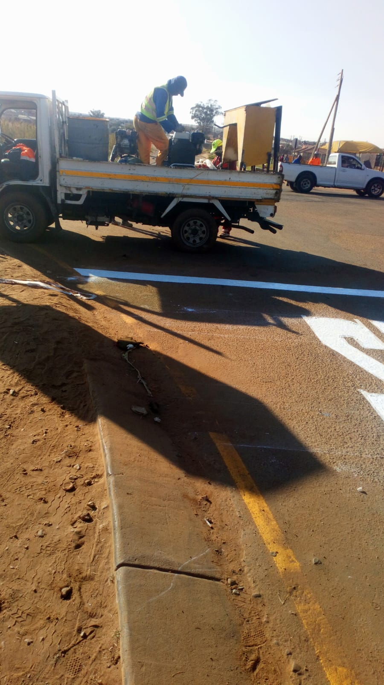
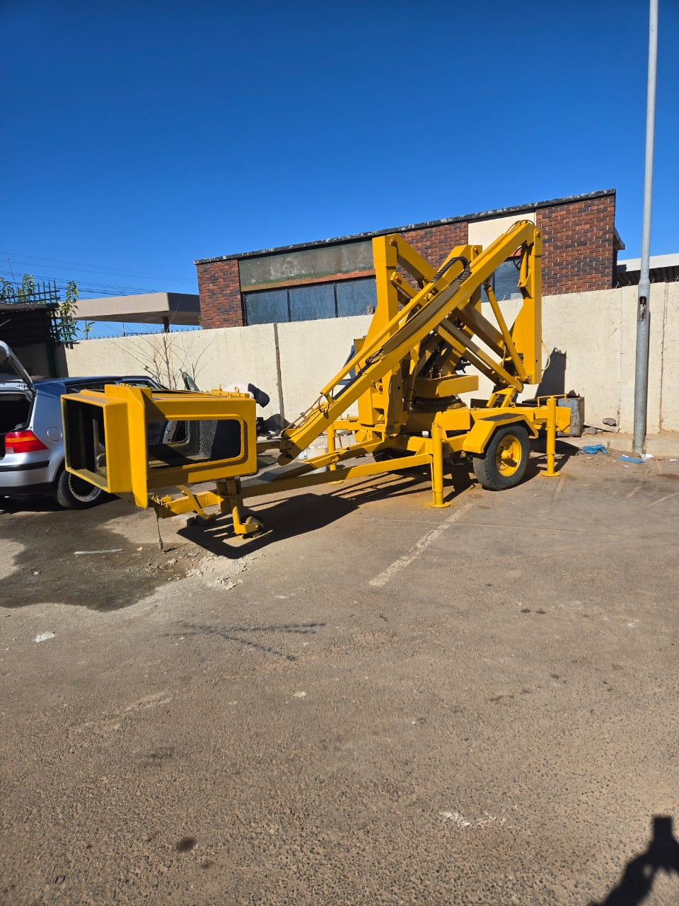

Road Construction Portfolio
Active and completed road surfacing, layer works, and transit infrastructure.
Asphalt Overlay & Surfacing
Continuous asphalt laying, compaction, and rolling.

Road Markings & Furniture
Reflective thermoplastic line marking and signage.

Specialized Road Plant
Bitumen distributors, rollers, and profiling plant.

Subbase & Pavement Rebuild
Structural layer stabilization and lane renewal.